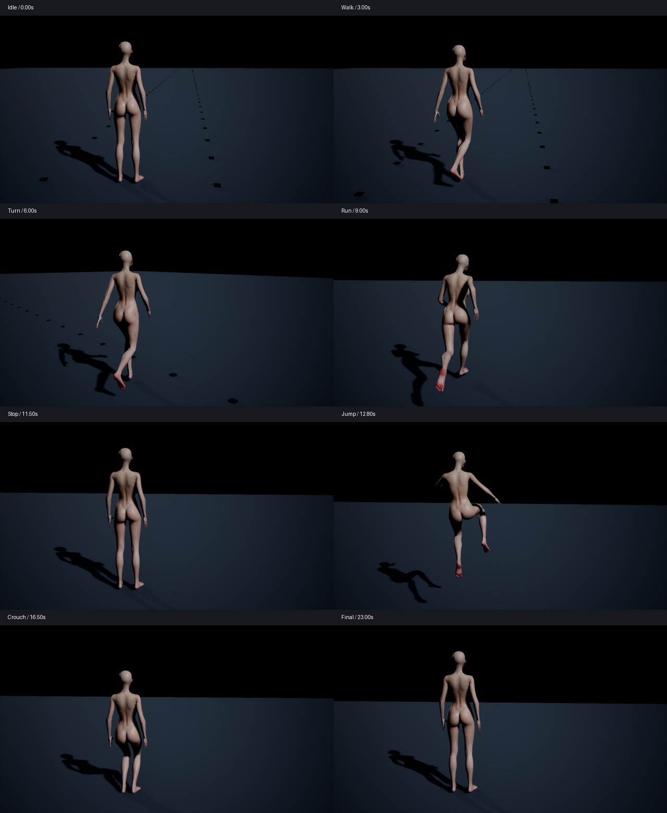

正常朝向 · 连续走跑转跳蹲
完整动作 · 24 秒 · 臀腿 Jiggle 开启
半速检查（无插帧）
动作关键帧

本次修正
之前斜着移动来自录制重定向：骨盆使用 Idle 首帧作零点，其他链条使用不同基准；前方向又从单侧脚趾估计。本次统一躯干、腿部的参考骨架旋转基准，以双侧髋关系确定前方向，根平移保持地面水平。手臂单独匹配实际肢段方向，避免源 A-pose 与目标 T-pose 差异造成手臂外张。
臀腿 Jiggle 继续使用已经发布的 LegResearch 参数。没有通过减少晃动来掩盖动画朝向错误。
连续动作
| 时间 | 动作 |
|---|---|
| 0–2 秒 | 站立、起步 |
| 2–5 秒 | 行走 1.6 m/s |
| 5–7 秒 | 行走中转身 90° |
| 7–11 秒 | 加速至跑步 4 m/s |
| 11–12 秒 | 急停与余振 |
| 12–14 秒 | 预备、跳跃、落地缓冲 |
| 15–18.8 秒 | 蹲下、保持、起身 |
| 19–24 秒 | 再次行走、停下、恢复 |
整个序列一次连续模拟，没有拼接不同角色镜头。采用右肩后方跟随相机。主光、补光随角色方向转动，保证转身后仍能观察臀腿；地面标记为固定世界位置。
实际记录
| 项目 | 结果 |
|---|---|
| UE 世界 | PIE |
| 帧数 / 时长 | 720 / 24 秒 |
| 行走平均骨盆偏航 | 2.13° |
| 跑步平均骨盆偏航 | 0.67° |
| 累计行进 | 26.92 m |
| 转向 | 90.0° |
| 跳跃根位移峰值 | 54.90 cm |
| 骨骼矩阵有限值 | True |
| 臀 / 腿 Jiggle | True / True |
| Jiggle 限位修正计数 | {'leg': 0, 'glute': 0} |
偏航是骨盆相对角色前方向的测量；步态包含正常的周期性骨盆旋转，不要求每帧为零。原录像行走、跑步平均约 −20° / −22°。生产关节限位仍生效：录制中累计 653 次骨骼请求受限，最大修正 43.84°。
验证范围
本次是真实 BP_VamCharacter 的 PIE 渲染，使用原生产角色资产；UE 编译与录制自动测试均保留日志。成片 30 fps，模拟固定步长 1/60；这不是实时性能测量。
行走、跑步、跳跃姿态来自 UE 自带动画。工程没有现成蹲下动画，蹲起由连续混合的骨骼姿态生成。世界移动与跳跃轨迹由录制脚本驱动，尚不能作为 CharacterMovement、脚底锁定或碰撞落地系统的验收。Contact 关闭，以便观察已有 Jiggle。
资产身份：843374e7df2fa61a960032b3ea36d5df34558ee2d9f3b7fca1f3363615fee5f8。
[关键帧](keyframes.jpg) · [数据分析](analysis.json) · [逐帧骨骼和求解器记录](locomotion.json.gz) · [录制命令](command.json) · [编译日志](compile.log) · [UE 日志](runtime.log.gz)